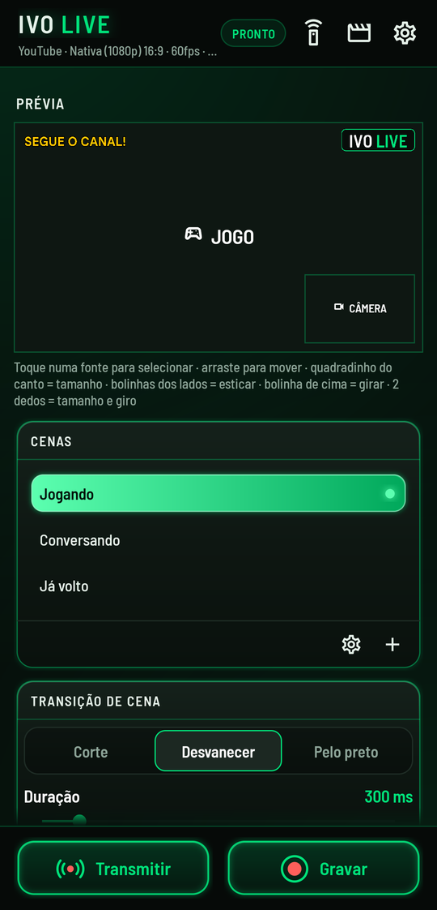

Cenas e fontes
Monte a tela da sua live
- Jogo, câmera, imagem, texto, página da web e outro celular, tudo na mesma cena.
- Arraste, gire, recorte e troque de cena com um toque.
- Modelos prontos: jogo com câmera em cartão, já volto, encerramento.
